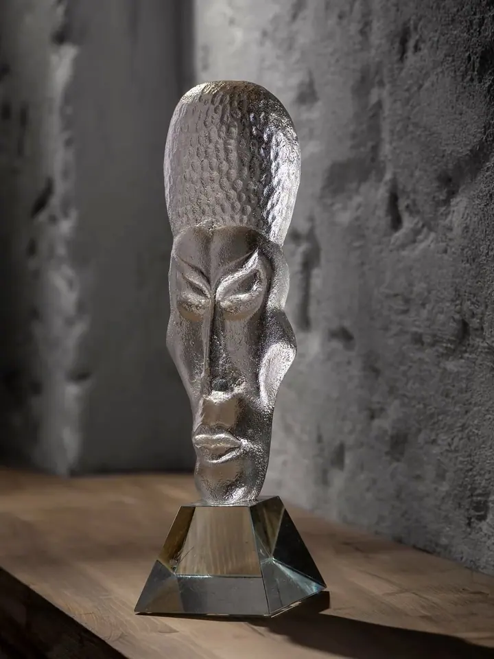
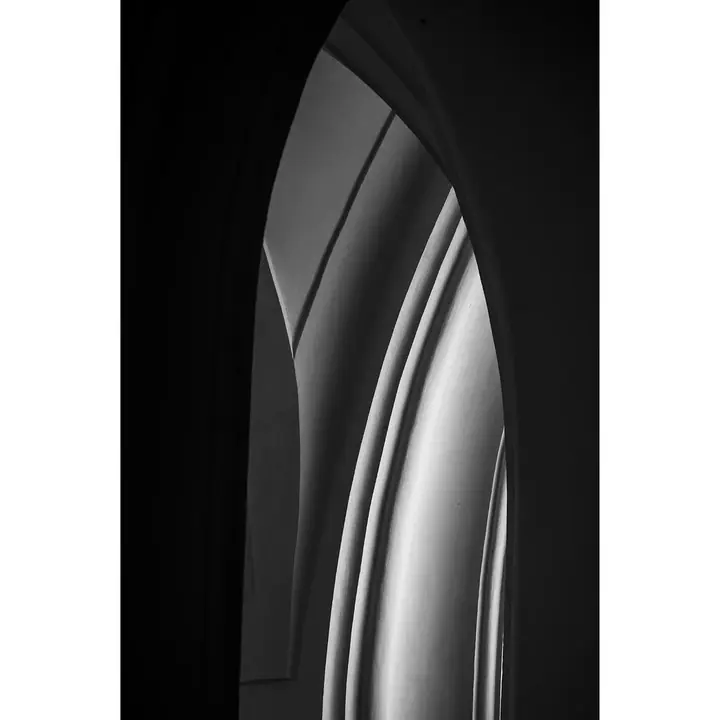
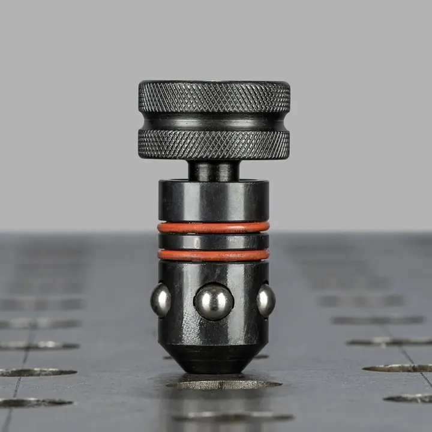
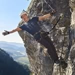

01 / 04
Produktová fotografie
Fotím produkty pro e-shopy, katalogy a reklamu, hlavně v ateliéru v Sobíňově. Rád pracuji se sklem, kovem a dalšími materiály, kde hraje hlavní roli světlo.
Zeptat se na termín→


Produkty, interiéry a architektura
Zeptat se na termín →(01) Ahoj
Jmenuji se Martin Halama a živím se jako fotograf na volné noze. Na tomto profilu se věnuji reklamní a produktové fotografii, fotím sklo , technické výrobky i budovy a interiéry pro firmy, galerie a muzea.
465lidí sleduje mou práci na Instagramu
137příspěvků s fotkami a příběhy
(02) Co fotím
01 / 04
Fotím produkty pro e-shopy, katalogy a reklamu, hlavně v ateliéru v Sobíňově. Rád pracuji se sklem, kovem a dalšími materiály, kde hraje hlavní roli světlo.
Zeptat se na termín→02 / 04
Nafotím vaše prostory, budovy a provozovny tak, aby dobře vypadaly na webu i v prezentacích. Fotím i pro galerie a muzea.
Zeptat se na termín→03 / 04
Kromě fotek připravím i propagační grafiku. Ode mě tak dostanete fotografickou i grafickou práci najednou.
Zeptat se na termín→Dále nabízím
Fotím firemní akce, křty a další události, abyste z nich měli fotky pro web, sociální sítě i archiv.
↗(04) Postup
Od první zprávy po hotovou galerii.
Krok 1 z 4
Napište mi e-mail, zavolejte nebo se ozvěte přes WhatsApp či sociální sítě. Stačí krátce popsat, co potřebujete nafotit.
Krok 2 z 4
Společně si ujasníme, k čemu fotky budou, kolik jich potřebujete a jestli se bude fotit v ateliéru, nebo u vás.
Krok 3 z 4
Produkty fotím v ateliéru v Sobíňově, interiéry, budovy a akce přímo na místě. Světlo stavím podle materiálu a prostoru.
Krok 4 z 4
Vybrané snímky upravím a předám. Pokud chcete, připravím k nim rovnou i propagační grafiku.
Každý materiál potřebuje své světlo.
(05) Za objektivem
Jmenuji se Martin Halama a živím se jako fotograf na volné noze. Na Vysočině, v obci Sobíňov, mám zařízený vlastní ateliér, kde vzniká většina mých produktových fotek.
Pro firmy fotím produkty, interiéry, exteriéry a firemní akce. Ke snímkům umím připravit i propagační grafiku, takže od jednoho člověka dostanete fotografickou i grafickou práci. Rád fotím sklo, architekturu a předměty pro galerie a muzea.
Fotím ale i lidi: svatby, rodinné portréty, glamour, boudoir a newborn. Těm se věnuji na druhém profilu. Mezi zakázkami si najdu čas i na volnou tvorbu a cestování, třeba do Paříže nebo do hor.

Martin
Martin Halama · Reklamní a produktový fotograf
Většinou ve svém ateliéru v obci Sobíňov na Vysočině. Velké nebo nepřenosné věci můžeme nafotit i u vás.
Ano, fotím interiéry i exteriéry firem, provozoven a veřejných budov, včetně galerií a muzeí.
Záleží na rozsahu zakázky, počtu fotek a místě focení. Napište mi, co potřebujete, a pošlu vám nabídku.
Ano, kromě focení dělám i propagační grafiku, takže máte fotky i podklady pro reklamu z jednoho místa.
(07) Kontakt
Napište pár vět o tom, co si představujete, a termín, který se vám hodí.
xhalamam@seznam.cz